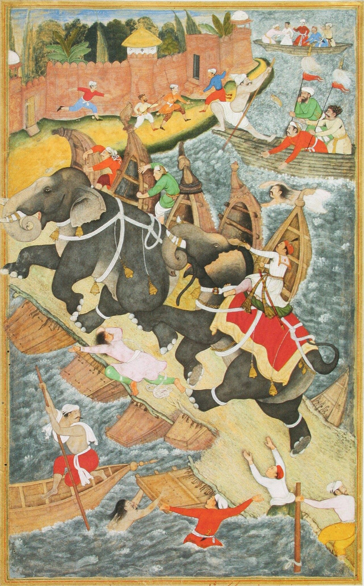

Chapter 6: Chariots, Elephants and Horses: The Animals of War¶
6.1 Introduction¶
Before the age of the railway and the motor engine, armies moved and fought with the help of animals. In India three animals shaped warfare above all: the horse, which drew the chariot and later carried the cavalryman; the elephant, which was India’s distinctive contribution to the warfare of the ancient world; and the ox, together with the camel in the arid west, which carried supplies and dragged guns. The availability of these animals depended on ecology and trade, and much of the military history of the subcontinent can be understood as the story of who controlled their supply.
Two scholars have been especially influential in developing this approach. Thomas Trautmann’s Elephants and Kings traces the history of the war elephant from its origins in India to its spread across Eurasia and its decline, and argues that the relationship between kings and wild elephants shaped Indian kingship and the preservation of Indian forests (Trautmann 2015). Jos Gommans and Simon Digby have shown how the supply of war-horses, mostly imported, determined the shape of medieval and early modern Indian armies (Gommans 2002; Digby 1971). This chapter draws on their work.
6.2 The Chariot¶
6.2.1 Origins and the Vedic chariot¶
The light, horse-drawn chariot with spoked wheels developed on the steppes of Central Asia around the beginning of the second millennium BCE and spread rapidly across Eurasia, to Mesopotamia, Egypt, Anatolia, China and India. In the Ṛgveda it is the vehicle of gods and heroes. The hymns describe its wheels, felly, spokes, nave and axle, its pole and yoke, and the two horses that drew it, and they compare the making of a hymn to the work of a carpenter fashioning a chariot (Singh 1965; Jamison and Brereton 2014). The chariot carried two men, a driver and a fighter who was usually an archer. Chariot races were part of the great royal rituals of the later Vedic period, such as the vājapeya, in which the sacrificer wins a race run by seventeen chariots.
6.2.2 The epic chariot¶
In the epics the chariot is the vehicle of the great warrior (rathin, mahāratha), and much of the poetry of battle consists of chariot duels. The charioteer (sūta) is a figure of ambiguous status: essential to victory and often the warrior’s confidant, yet socially inferior. Kṛṣṇa serves as Arjuna’s charioteer at Kurukṣetra, and the Bhagavadgītā is spoken on the chariot between the armies; Śalya drives for Karṇa and taunts him; Karṇa himself, believed to be the son of a charioteer, is mocked for his supposed birth. The epic grades warriors by their prowess as chariot-fighters — atiratha, mahāratha, ratha, ardharatha — and describes chariots with banners, multiple horses and quivers of arrows (Hopkins 1889).
6.2.3 Decline¶
In historical warfare the chariot was already in decline by the time it was being celebrated in epic poetry. Porus fielded chariots at the Hydaspes in 326 BCE, but they were bogged down in the mud and achieved little. The Mauryan war office described by Megasthenes still had a board for chariots, and the Arthaśāstra describes their uses; but in the early centuries CE chariots disappear from the evidence of actual battles. Several reasons can be suggested: the rise of the war elephant as the elite heavy arm; the spread of cavalry using saddles and, later, stirrups, which could do what chariots did more cheaply and over rougher ground; the difficulty of using chariots in broken, forested or wet terrain; and the cost of keeping chariot horses in a country where good horses were scarce (Roy 2004). The chariot survived in literature, ritual and art — and in the great temple cars (ratha) drawn in processions — long after it had vanished from the battlefield.
6.3 The War Elephant¶
6.3.1 An Indian invention¶
Elephants were tamed and used in South Asia from an early period; the Harappan seals depict elephants, though not as war animals. The war elephant — an elephant trained to carry fighters and to charge in battle — appears in the evidence of the later first millennium BCE, and Trautmann argues that it was an Indian invention, perfected in the Ganges valley and especially in Magadha, whose rulers had access to the elephant forests of eastern and central India (Trautmann 2015). From India the war elephant spread westward: the Persian kings acquired Indian elephants, Alexander met them at Gaugamela and the Hydaspes, and Seleucus’s acquisition of five hundred elephants from Candragupta Maurya around 303 BCE made elephants a feature of Hellenistic warfare. The Ptolemies of Egypt and Carthage later used African forest elephants, captured and trained on the Indian model. Eastward, the war elephant spread to Sri Lanka and Southeast Asia, where it remained important into the nineteenth century.
6.3.2 Capture, not breeding¶
A central point of Trautmann’s argument is that war elephants were captured, not bred. Elephants take many years to reach maturity, a female gives birth to a single calf after a pregnancy of nearly two years, and a captive elephant must be fed and cared for during its long years of uselessness. It was far cheaper to capture adult or young elephants from the wild and train them. Indian kings therefore depended on the continued existence of wild elephant populations, and this gave them an interest in protecting forests. The Arthaśāstra prescribes elephant forests (nāgavana) under a superintendent and guards, with severe penalties for killing an elephant (AŚ 2.2) (Kangle 1960–1965; Trautmann 2015). The text also ranks elephants by region: those of the eastern forests of Kaliṅga and Aṅga were the best.
Capture was a skilled and dangerous operation, carried out by forest peoples with specialised knowledge. Methods included driving wild herds into stockades (the method later known in British India as kheddah), luring males with tame females, and trapping in pits. Captured elephants were tamed and trained by mahouts, who directed them with voice, feet and the goad (aṅkuśa).
6.3.3 The elephant in battle¶
Elephants served several purposes. They were a shock weapon, charging enemy lines and trampling men and horses unaccustomed to them; they carried archers, javelin-men and later musketeers in howdahs; they served as mobile command posts, raising the commander above the dust of battle so that he could see and be seen; they battered gates and walls; and they carried baggage and dragged heavy loads. Elephants were armoured with quilted cloth, leather or plates, and their tusks were sometimes fitted with metal sheaths or blades.
Their weaknesses were equally well known. Wounded or frightened elephants could panic and stampede through their own ranks, as happened at the Hydaspes; they were vulnerable to fire, missiles and noise; and disciplined infantry could open their ranks and let them through, or attack their legs and trunks. Over time, armies facing elephants developed counter-measures such as caltrops, fire, and later firearms and rockets, which were particularly effective in frightening them. The elephant’s value also depended on its mahout: if the mahout was killed, the animal often became uncontrollable. Ancient and medieval commentators were well aware of this, and the Arthaśāstra recommends the use of elephants only on suitable ground.
6.3.4 Elephants and kingship¶
The elephant was a royal animal. Owning war elephants was a king’s privilege, and their numbers were a measure of his power; inscriptions and chronicles boast of elephants captured from defeated enemies, and the Aihoḷe inscription’s pun on Harṣa’s fallen elephants (Chapter 2) turns on the same idea. Medieval kings bore titles such as “lord of elephants” (gajapati); the Gajapati dynasty of Odisha took its name from it. The Delhi sultans, though their armies were built around cavalry, prized elephants and obtained many from Bengal and the eastern forests as tribute (Section 6.3.7) (Jackson 1999); the Mughal establishment is described in Section 6.5. Elephant fights were a royal spectacle at many courts.
6.3.5 The literature of elephants¶
India developed a specialised literature on elephants (gajaśāstra, hastyāyurveda). The Hastyāyurveda attributed to the sage Pālakāpya deals with elephant medicine; the Mātaṅgalīlā, a Sanskrit text from Kerala, describes the marks, kinds and temperaments of elephants and their capture and care; the encyclopaedic Mānasollāsa discusses elephant sports and the royal elephant establishment (Shrigondekar 1925–1961). The Hastividyārṇava, an illustrated Assamese treatise completed in 1734 for the Ahom court, is one of the finest of these works (Choudhury 1976). Its paintings show elephants of different types, their capture, treatment and diseases (on its misdescription in popular books, see Section 3.8).
6.3.6 Decline¶
The war elephant declined with the rise of effective artillery and musketry in the sixteenth to eighteenth centuries. Guns could kill or panic elephants at a distance, and the elephant’s size made it an easy target. Bābur, at Pānīpat in 1526, faced the elephants of Ibrāhīm Lodī with guns and archers, and they contributed to the confusion of the Lodī army (Thackston 1996). Elephants continued to be used to carry commanders, to haul artillery and baggage, and in the wars of the eighteenth century; the East India Company used them for transport well into the nineteenth century. But their role as the decisive shock weapon of Indian armies was over by about 1700.
6.3.7 The elephant trade¶
Elephants were traded as well as captured. Sri Lanka was a major source of war elephants for the kingdoms of south India; classical writers already mention the export of Sri Lankan elephants, and in the medieval period elephants were shipped from the island to the Coromandel and Malabar coasts. Elephants were also sent as tribute or gifts between rulers: Bengal and Odisha supplied many of the elephants of the Delhi sultans and the Mughals, and the capture of an enemy’s elephants was one of the main prizes of victory (Digby 1971; Trautmann 2015). Simon Digby showed that in the Delhi Sultanate the possession of elephants was a royal monopoly, and that the sultans’ control of the eastern elephant-bearing regions was one of the foundations of their military power.
Southeast Asian kingdoms, too, maintained war elephants on the Indian model; the bas-reliefs of Angkor Wat in Cambodia, of the twelfth century, show Khmer kings and commanders on elephants, and war elephants remained important in the wars of Burma, Siam and Cambodia into the nineteenth century.
6.4 The Classification and Training of Elephants¶
The elephant literature classifies elephants in elaborate ways. The Arthaśāstra and later texts distinguish types such as the bhadra, mandra and mṛga, by build and temperament, and a mixed type (saṅkīrṇa); they also distinguish elephants by age, by the region of the forest from which they came, and by their suitability for war, riding or carrying loads (Kangle 1960–1965; Trautmann 2015). The Arthaśāstra describes the stages of training: elephants were first accustomed to captivity and to their keepers, then trained to obey commands, to carry riders and loads, and finally to the special tasks of war — charging, breaking down gates and walls, trampling, and standing firm in the noise of battle (AŚ 2.31–32). Elephants were also trained to endure the sound of drums and the sight of fire.
The care of elephants was the work of skilled specialists: mahouts (hastipaka, mahāmātra), who rode and directed them; grooms and fodder-cutters; and elephant physicians, whose knowledge is recorded in texts such as the Hastyāyurveda. The mahout’s relationship with his elephant, often lifelong, was the foundation of the elephant’s usefulness, and the mahout’s craft was usually hereditary. In the forests, the knowledge of elephant-catchers from forest communities was indispensable to kings.
6.5 Elephants in the Mughal Empire¶
The Mughal emperors kept very large numbers of elephants, both in the imperial stables and in the establishments of their nobles. The Āʾīn-i Akbarī describes the imperial elephants in detail: their grading into classes according to size, temper and strength, their daily rations of grain, sugar and ghee, the number of attendants assigned to each, the fines imposed on keepers whose elephants grew thin, and the special elephants reserved for the emperor’s own use (Blochmann 1873). Elephants carried the emperor and his nobles in procession and in battle, drew heavy guns, carried baggage, served in hunts and fought in staged combats for the court’s entertainment. Akbar himself was celebrated by his chroniclers for his skill in mounting and controlling fierce elephants in musth, a dangerous display of courage that was also a demonstration of royal power (Figure 6.1). Although the military importance of the elephant declined in the age of firearms, its symbolic and logistical importance remained great.


6.6 Elephants in the Colonial Army and After¶
The decline of the war elephant did not end its military use. The East India Company and the later Indian Army kept elephants as transport animals, especially for heavy loads and difficult country, and in the nineteenth century heavy artillery was sometimes drawn by elephants on the march, with bullocks or horses taking over close to the enemy, where the elephants were too vulnerable and too easily frightened by gunfire (Trautmann 2015). Elephants were also used in the wars in Burma and on the north-eastern frontier, where roads were few and forests dense.
The last large-scale military use of elephants in the region came in the Second World War. During the Burma campaign the British army took over working elephants from the timber companies and used them to carry supplies, to build and repair bridges and to move through country impassable to vehicles. The work was described by J. H. Williams, a timber company officer who organised the army’s elephant companies, in his memoir Elephant Bill (Williams 1950).
After independence the elephant’s military role ended, but its ceremonial role continued. Caparisoned elephants still lead temple festivals in Kerala and the Daśahrā procession at Mysore, a ceremony that descends from the royal festival of the Vijayanagara and Mysore kings (Chapter 13). The capture of wild elephants, once a royal monopoly and a major military enterprise, gave way in the later twentieth century to conservation: the Asian elephant is now an endangered species, and its survival in India depends on the protection of the forests from which, for two thousand years, kings took their war elephants (Trautmann 2015).
6.7 The Horse¶
6.7.1 A country short of good horses¶
The horse is not native to the subcontinent, and good war-horses were always scarce. The hot, humid climate of much of India, its diseases, and the lack of extensive dry pastures made it difficult to breed horses of the size and stamina needed for war. The most important horse-breeding regions within South Asia were in the arid and semi-arid zone running from the north-west through Sindh, Rajasthan and Gujarat into the western Deccan; elsewhere, horses had to be imported (Gommans 2002).
Imports came by two routes. Overland, horses from Central Asia and Afghanistan were driven through the passes of the north-west and sold at fairs in Punjab and the Ganges valley; early Sanskrit and Pali texts already praise horses from Kamboja and the Sindhu region in the north-west. By sea, Arab and Persian merchants shipped horses from the Persian Gulf and southern Arabia to the ports of Gujarat, the Konkan, Malabar and the Coromandel coast; the south, as Section 6.7.2 shows, depended on this sea trade most of all.
Some modern accounts claim that India had a flourishing indigenous horse-breeding tradition that made imports unnecessary. The evidence does not support this. Indian breeds did develop, especially in the arid west (Section 6.7.3); but the cavalry of the Delhi Sultanate, the Deccan states and the Mughals relied heavily on imported animals, and the horse trade was a major item of the subcontinent’s foreign trade for many centuries (Digby 1971; Gommans 2002).
6.7.2 Horses in the south¶
South India depended especially heavily on imported horses. Marco Polo, visiting the Pāṇḍya country in the 1290s, reported that its kings bought thousands of horses every year from Arab and Persian traders, and that, because of the climate and their keepers’ ignorance, most of the horses died within a year, so that new ones had always to be bought — a complaint that suited the interests of the traders. Persian historians of the Mongol Ilkhanate also describe the great horse trade from the Persian Gulf to the ports of the south. The kings of Vijayanagara bought horses first from Muslim traders and then, after 1500, from the Portuguese at Goa, and Kṛṣṇadevarāya (r. 1509–1529), in his Telugu poem Āmuktamālyada, advised kings to improve their ports and to treat foreign merchants well so that the trade in horses and elephants would come to them and not to their enemies (Stein 1989). The Portuguese understood the importance of this trade and used it as a means of pressure on the Deccan states (Subrahmanyam 1993).
6.7.3 Indian horse breeds¶
Although good war-horses were mostly imported, India did develop horse breeds of its own, especially in the arid west. The Kathiawari of Gujarat and the Marwari of Rajasthan, with their characteristic inward-curving ears, are hardy desert horses, bred over centuries from local and imported stock; they were prized by the Rajput states. The Marathas bred small, tough horses in the Bhīmā valley (the “Bhimthadi” horse), suited to the long, fast marches of their light cavalry. The Manipuri pony, small and agile, was used in the cavalry of the Manipur kingdom and in the game of polo, which the British learned in Manipur in the nineteenth century and spread throughout the world (Gommans 2002). These breeds supplemented, but did not replace, the import of larger horses from Central Asia and the Gulf.
6.7.4 The cavalry revolution¶
Horsemen are mentioned in the Vedic texts, but as a fighting arm cavalry became decisive in India only in the centuries around the turn of the era, with the Śakas, Kuṣāṇas and later the Hūṇas, mounted archers from the steppe. Gupta coins show the king on horseback, and Gupta-period sculpture shows cavalry. Cavalry became the dominant arm with the Turkic and Afghan armies of the eleventh to thirteenth centuries. Their mounted archers, highly mobile and supported by a constant supply of imported horses, defeated the elephant-and-infantry armies of many north Indian kings. The establishment of the Delhi Sultanate in 1206 was in large part a cavalry conquest (Jackson 1999).
The stirrup deserves a word. Loops for the big toe appear on riders in Indian sculpture from about the second or first century BCE (at Sāñcī and elsewhere), and some historians count them as the earliest stirrups; whether they were in general use, and whether they were stirrups at all rather than mounting aids, is debated. The rigid stirrup for the whole foot was developed in China and on the steppe by about the fifth century CE and seems to have reached India later, probably with Central Asian and Turkic horsemen. Its effect on Indian warfare is also debated; it gave the rider a steadier seat for archery and for lance and sword, but Indian cavalry did not change overnight because of it.
6.7.5 Cavalry in the Mughal and successor states¶
The Mughal army was above all a cavalry army. Each noble (manṣabdār) held a rank with two numbers, zāt (personal rank) and sawār (the number of horsemen he was obliged to maintain), and was paid, through salary or land revenue assignments, to keep a specified number of horsemen with horses of specified quality. To prevent fraud, horses were branded (dāgh) and descriptive rolls of the troopers (chehra) were kept, a system introduced under Akbar (Athar Ali 1966; Richards 1993; Irvine 1903). Mughal cavalry fought with bow, lance, sword and, increasingly, the matchlock.
The Marathas built their power on light cavalry, able to cover great distances, live off the land and avoid pitched battle; their troopers were either provided with horses by the state (bārgīr) or brought their own (śiledār) (Gordon 1993). The Sikh misls of the eighteenth century were also predominantly cavalry forces. The Pindaris, bands of irregular horsemen who served Maratha armies and lived by plunder, were suppressed by the East India Company in 1817–18. By the late eighteenth century, however, infantry trained in European drill and supported by field artillery had become the decisive arm, and Indian states that relied on cavalry alone were at a disadvantage against the Company’s armies (Chapter 19).
6.7.6 The literature of horses¶
Sanskrit texts on horses (aśvaśāstra) are attributed to Śālihotra, a legendary authority on horse medicine, and to Nakula, the Pāṇḍava prince who was an expert horseman. They deal with the marks of good and bad horses, their colours, their diseases and remedies, and their training. The Arthaśāstra’s chapter on the superintendent of horses describes stables, rations, training, and the classes of horses by origin and quality (AŚ 2.30) (Kangle 1960–1965); the Mānasollāsa discusses horsemanship and polo (Shrigondekar 1925–1961). Persian works on horses (faras-nāma) circulated at the Mughal and Deccan courts and were sometimes translated or adapted from Sanskrit.
6.8 The Horse Fairs¶
Horses imported overland and bred in the arid zone were sold at great fairs held at fixed times of the year, many of them attached to religious festivals. The fair at Sonpur on the Ganges in Bihar, held at the full moon of Kārttika (October–November), was one of the largest animal fairs in Asia, where horses, elephants and cattle were traded; the fair at Pushkar in Rajasthan and many others served the same purpose. Armies and their commanders bought remounts at these fairs, and the fairs were also places where soldiers could find employment. Gommans has shown how this network of fairs and trade routes linked the horse-breeding regions of Central Asia and the arid zone with the armies of the Ganges valley and the Deccan (Gommans 2002).
6.9 Oxen, Camels and the Logistics of War¶
Armies needed far more animals for transport than for fighting. Bullocks drew carts and carried packs; camels carried loads in the arid west and north; elephants carried heavy baggage and hauled guns. Perhaps the most important logistical institution of pre-colonial north and central India was the Banjārā, communities of itinerant grain-carriers who moved with large herds of pack oxen and supplied armies on campaign with grain bought in the countryside (Kolff 1990; Gommans 2002). Mughal, Maratha and later British armies depended on them, and the size and speed of an army were often limited by the number of Banjārā bullocks that could be hired.
Large armies moved slowly, accompanied by markets (bāzār), servants, families and camp followers who sometimes outnumbered the soldiers many times over. Contemporary descriptions of Mughal armies on the march compare them to moving cities. Their need for fodder and grain shaped the timing of campaigns, which normally began after the monsoon and the autumn harvest and ended before the next rains.
6.10 Camels and the Desert¶
In the deserts of Rajasthan, Sindh and the north-west, the camel was indispensable. It carried supplies across country where oxen could not find water or fodder, carried riders on long, fast journeys, and in the seventeenth and eighteenth centuries carried light swivel guns (shutarnāl, zamburak), which could be fired from the kneeling animal (Chapter 5). Nādir Shāh’s camel guns were among the weapons that defeated the Mughals at Karnal in 1739. The Rajput states of the desert, especially Bikaner and Jaisalmer, bred camels and maintained camel-mounted troops; the Bikaner camel corps, the Ganga Risala, served in the British imperial forces in China in 1900 and in Egypt and Palestine in the First World War. Where the camel mattered, the arid zone mattered, and the arid zone was the corridor of conquest for most of Indian history (Gommans 2002).
6.11 Draught Cattle and the Artillery¶
The coming of heavy artillery increased the importance of draught animals. Siege guns were drawn by long teams of oxen, sometimes assisted by elephants pushing from behind. The rulers of Mysore developed a specialised breed of draught cattle, later known as the Amrit Mahal, for moving guns and supplies quickly; the East India Company, after the conquest of Mysore, took over the breeding establishments and used the cattle for its own artillery and transport. The speed of Haidar Ali’s and Tipu Sultan’s armies, which often outmarched their opponents, owed much to these animals and to the organisation of supply (Roy 2011).
6.12 The Care of Animals¶
Armies that depended on animals needed people to care for them. The Arthaśāstra prescribes for the royal stables of horses and elephants a staff of trainers, grooms, cooks for the animals’ food, physicians and guards, specifies rations and exercise, and lists diseases and their treatment (Kangle 1960–1965). The veterinary literature of horses and elephants (Chapter 3) shows a detailed, if traditional, knowledge of animal diseases. The Mughal stables were organised in the same way on a vast scale, with officials responsible for the purchase, branding, feeding and inspection of horses, elephants and camels (Blochmann 1873). In the field, the need for fodder and water often determined the route and timing of campaigns, and the death of animals from overwork, heat, cold and disease was one of the commonest causes of military failure.
6.13 The Hunting Cheetah and the Royal Menagerie¶
Kings also kept animals for display and for the hunt: trained cheetahs, hawks, hunting dogs, fighting rams and cocks, and wild animals in menageries. Animal fights — of elephants, buffaloes, rams and cocks — were staged at many courts as entertainments, and the Mānasollāsa describes several of them among a king’s recreations (Shrigondekar 1925–1961). These activities were closely linked to war: they displayed royal power over the natural world, trained men in handling dangerous animals, and provided the same kind of spectacle as the military parade.
6.14 Ecology and Empire¶
Taken together, the history of the chariot, the elephant and the horse suggests a broad pattern in Indian military history. The forests of eastern and central India supplied elephants, and the kingdoms that controlled them — Magadha, Kaliṅga, later Bengal and Odisha — were rich in this distinctive military resource. The arid zone of the north-west and the Deccan supplied horses, or controlled their import, and was the corridor through which cavalry armies from Central Asia entered India (Gommans 2002). Kings needed both, and much of the strategy of Indian states, from the Mauryas to the Mughals, can be understood as an effort to secure access to elephant forests on one side and horse markets on the other. The shift of military power from the elephant to the horse, and then to the gun, marks the main stages of the history narrated in the following chapters. Table 6.1 summarises the sources, uses and periods of importance of the principal animals of Indian warfare.
| Animal | Principal sources | Military uses | Period of greatest importance |
|---|---|---|---|
| Horse (chariot) | Steppe and north-west | Drawing war chariots | 2nd–1st millennium BCE |
| Elephant | Forests of eastern and central India; Sri Lanka; south India | Shock, command, siege, transport | Late 1st millennium BCE to c. 1700 |
| Horse (cavalry) | Central Asia, Afghanistan, Arabia and the Gulf; the arid west of India | Mounted archery, lance and sword; raiding | From the early centuries CE; dominant c. 1000–1800 |
| Camel | Rajasthan, Sindh, the north-west | Transport; swivel guns; desert raiding | Medieval and early modern |
| Ox | Throughout India; Mysore draught breeds | Transport; drawing artillery; grain trains | Throughout; crucial in the age of artillery |
Further Reading¶
-
Trautmann (2015): the war elephant from India to the Mediterranean and Southeast Asia.
-
Digby (1971): horses and elephants as military supplies in the Delhi Sultanate.
-
Gommans (2002): the arid zone, the horse trade and Mughal cavalry.
-
Choudhury (1976): the Assamese elephant treatise.
-
Singh (1965): the Vedic chariot.